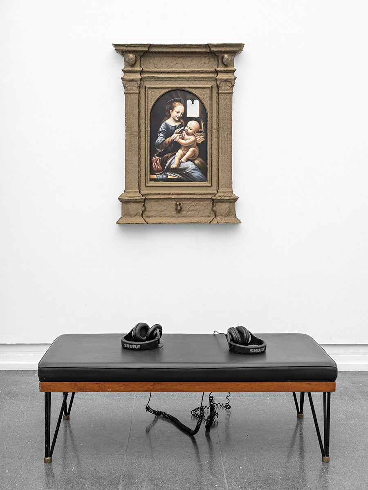
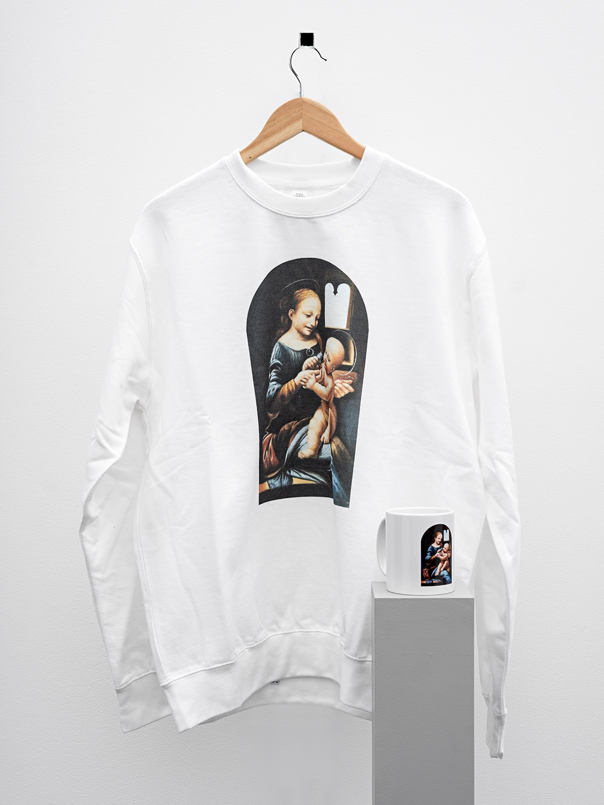
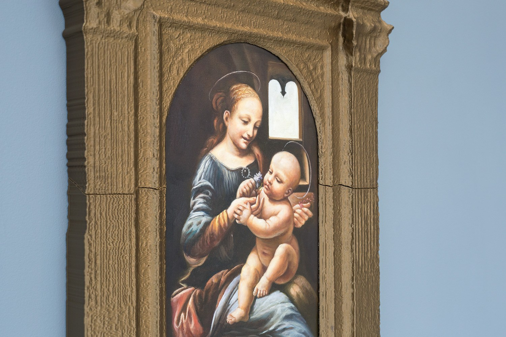
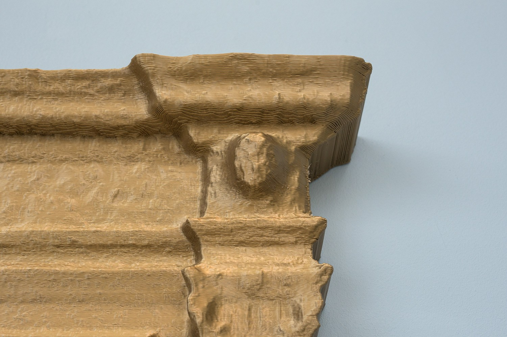
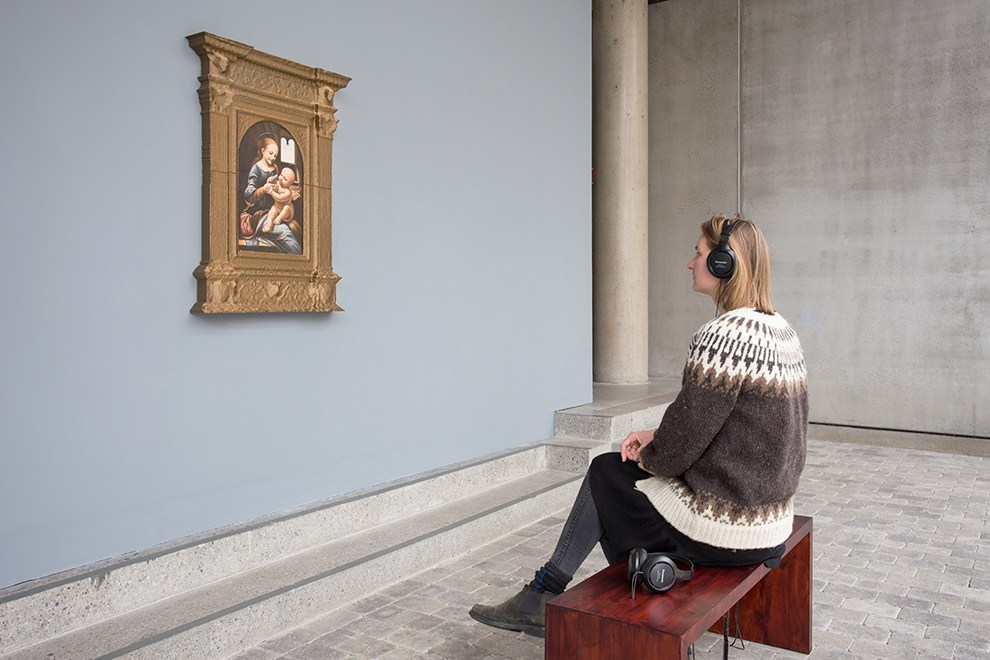
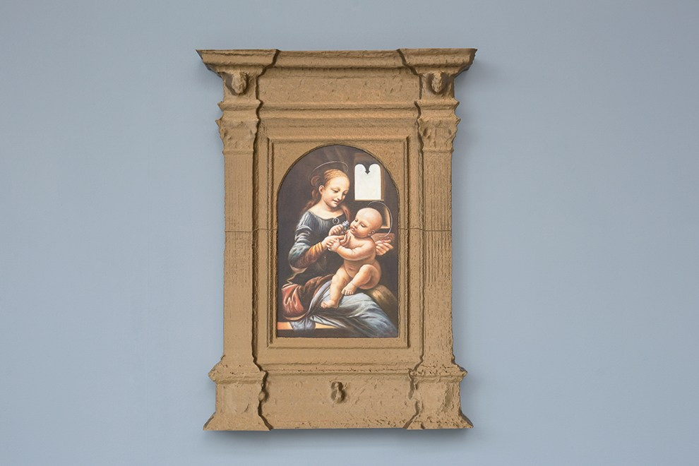

Distant Relatives, 2019
Distant Relatives began with a painting that once belonged to my family: Leonardo da Vinci’s Benois Madonna, sold to the Hermitage Museum before the Russian Revolution. I reconstructed the painting from a low-resolution digital image and returned it to circulation through sculpture, sound and merchandise. The work follows an object as it moves between family history, museum authority, reproduction and commodity.
Photography (Høstutstillingen/NBK white-background installation views): Vegard Kleven





